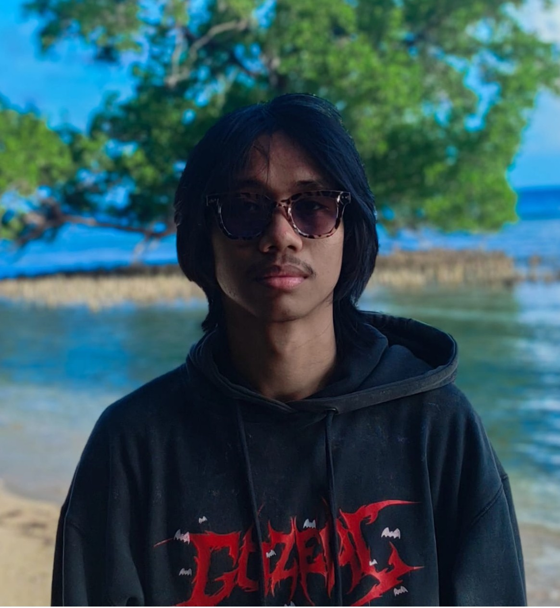

Rumah Nawfal · About Me

Hai, aku Nawfal!
Mahasiswa Linguistik Indonesia di Universitas Pembangunan Nasional "Veteran" Jawa Timur yang antusias menggabungkan bahasa dan teknologi digital. Selamat datang di sudut kecil duniaku.
Siapa aku
Sebagai pembelajar otodidak, aku senang mengeksplorasi berbagai keterampilan teknis, mulai dari dasar-dasar pemrograman hingga produksi konten multimedia. Aku punya kemauan kuat untuk mempelajari teknologi baru yang menunjang kreativitas, terutama di bidang Video Editing dan Fotografi.
Fokusku
Menciptakan karya yang inovatif dengan memanfaatkan alat-alat teknologi terkini — dari cerita visual sampai situs web pertama yang kubangun sendiri.
Kenapa sebuah planet kecil?
Karena portofolio tidak harus dibaca dari atas ke bawah. Di sini kamu bisa berjalan-jalan, mampir ke tiap bangunan, dan menemukan ceritaku dengan caramu sendiri.
const creativeTech = {
name: 'Mohammad Nawfal Arfa',
role: 'Linguist & Creative Creator',
passion: 'Exploring tech, self-taught
coding, and visual storytelling'
};